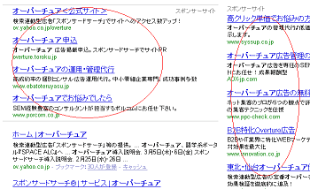

ヤフーからのホームページ集客方法
ヤフー検索から自社のホームページへ集客する方法としては、検索連動型広告のオーバーチュアがあります。
【追記：】
※オーバーチュア株式会社は、2009年10月1日にヤフー株式会社と合併しました。現在はYahoo!広告へと名称が変更になっています。
→ Yahoo!広告
ヤフー検索にて指定したキーワードでのみ広告を配信できるため、その検索キーワードに関心のあるお客様だけを自社のホームページへと誘導することができます。
例えば、「オーバーチュア」と検索した場合、実際に広告が表示される箇所はヤフー検索結果のこのような赤丸で囲った部分になります。

このキーワードで検索する人の場合、たいていは「検索連動広告のオーバーチュアでヤフー検索から自サイトに集客したい動機のある人」になります。既にオーバチュアを利用しているユーザーかもしれませんし、まだ検討中の人かもしれませんが、いずれにしても検索連動広告のオーバーチュアに関心が高い人になります。
そのため、検索連動広告のコンサルタント会社や広告配信の代理サービス会社が、このキーワードで広告を配信しているケースが多いようです。
同じように、あなたのお店が花屋さんなら「フラワーギフト」とか、ピザ屋さんなら「ピザ宅配」など、検索キーワードを指定して広告を配信することで見込みの高いお客様だけを自社のホームページへと集客することができます。
費用については、１クリックいくらのクリック単価制となっており、キーワードごとの入札制となっています。
例えば、あるキーワードで１クリック100円で入札したとして、100クリックで100人集客した場合の広告費用は１万円になります。この集客した100人のうち、１割の10人が１万円の商品購入に至った場合、売上10万円で広告費用が１万円といった形になります。
入札制のため、購入率の高いキーワードは競合して入札単価が高くなっていく傾向があり、キーワードによって集客費用に違いがあります。
実際にオーバーチュア広告を使用する際には、サポートなしの「セルフコース」とサポートありの「アシストプラン」があります。自分で設定するセルフコースの場合、初回費用3,000円からスタートすることが可能で、広告出稿の費用は予算に合わせて配信することができます。
提携サイトは検索行為を経由しないコンテンツマッチ広告
ヤフーの検索結果欄のほか、提携サイトにはエキサイトやライブサーチ、オールアバウト、ブログサービスなどがあり、さまざまなコンテンツに広告が配信することができます。
ただし、提携サイト上に広告を配信する場合はユーザーの自発的な検索行為を経由しないため、検索キーワードとは連動しないコンテンツマッチ広告になります。そのため、「ヤフーの検索結果」と「提携サイト」では広告効果については差が出てくるかもしれません。
例えば、検索行為を経由した「ヤフーの検索結果」では購入率が10％であったとしても、検索行為を経由しない「提携サイト」では１％など、ある程度の差があるかもしれません。
ユーザーが自発的にそのキーワードで検索した「検索連動広告」の場合は関心が高めとなるのに対し、コンテンツ内容に合わせた「コンテンツマッチ広告」の場合は検索行為を経由していないため、購入率などの広告効果には多少の差が出てくるかもしれません。
この場合、ヤフー検索結果にのみ広告を配信することも可能ですので、「スポンサードサーチ」のみに配信し、「コンテンツマッチ」には配信しないことを選択されるとよいでしょう。
ちなみに、このオーバーチュアはヤフーの検索結果欄への配信になりますが、グーグル検索からホームページへ集客したい場合はアドワーズという検索連動型広告を利用することができます。